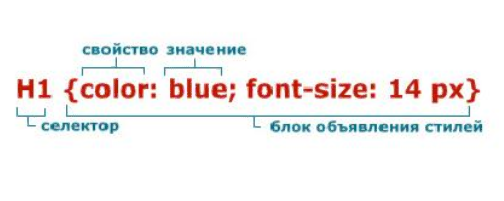
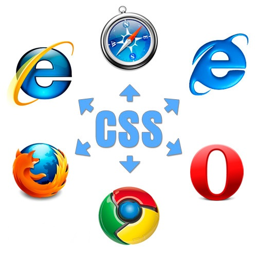

Введение в CSS

CSS (Cascading Style Sheets) — язык таблиц стилей, который позволяет прикреплять стиль (например, шрифты и цвет) к структурированным документам (например, документам HTML и приложениям XML). Обычно CSS-стили используются для создания и изменения стиля элементов веб-страниц и пользовательских интерфейсов, написанных на языках HTML и XHTML, но также могут быть применены к любому виду XML-документа, в том числе XML, SVG и XUL. Отделяя стиль представления документов от содержимого документов, CSS упрощает создание веб-страниц и обслуживание сайтов.
CSS поддерживает таблицы стилей для конкретных носителей, поэтому авторы могут адаптировать представление своих документов к визуальным браузерам, слуховым устройствам, принтерам, брайлевским устройствам, карманным устройствам и т.д.
Каскадные таблицы стилей описывают правила форматирования элементов с помощью свойств и допустимых значений этих свойств. Для каждого элемента можно использовать ограниченный набор свойств, остальные свойства не будут оказывать на него никакого влияния.
Объявление стиля состоит из двух частей: селектора и объявления. В HTML имена элементов нечувствительны к регистру, поэтому «h1» работает так же, как и «H1». Объявление состоит из двух частей: имя свойства (например, color) и значение свойства (grey). Селектор сообщает браузеру, какой именно элемент форматировать, а в блоке объявления (код в фигурных скобках) перечисляются форматирующие команды — свойства и их значения.
Преимущества CSS.
Принцип использования CSS заключается в следующем: Web-страница описывается двумя файлами. HTML-файл содержит описание структуры и содержания этой страницы, а CSS-файл (таблица стилей) – описание ее внешнего вида. На заре сайтостроения использовался только язык HTML, и приходилось придумывать новые теги и атрибуты для форматирования документа. Так как занимались этим разработчики браузеров, то получалась такая ситуация, что один и тот же HTML-документ в разных браузерах отображался по-разному. На сайтах можно было встретить такое обращение: «Сайт рекомендован к просмотру с помощью такого-то браузера и при таком-то разрешении». Конечно, долго такое положение продолжаться не могло. Интернет развивается, изменяются технические средства для работы с ним. Для просмотра сайтов мы используем не только стационарные компьютеры, но и ноутбуки, планшеты, мобильные устройства с самым разным программным обеспечением. И везде сайт должен отображаться так, как было задумано разработчиком.
Заключение
Хотите проверить как Вы усвоили CSS? Посетите CSS тестирование. После прочтения учебника появилось желание создать собственный веб-сайт? Посетите раздел веб-хостинг, чтобы узнать как можно разместить его в интернете. Забыли, что делает определенный тэг или захотели узнать о CSS больше (некоторые свойства не были рассмотрены в учебнике)? ... Теперь Вы знаете CSS, что дальше? После изучения CSS Вы можете переходить к изучению JavaScript или PhP.